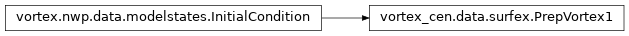
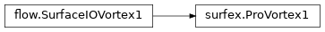
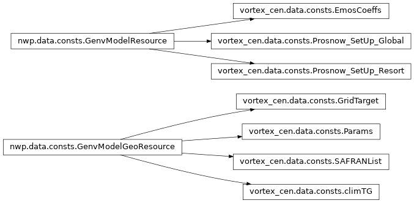
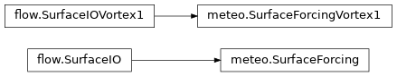
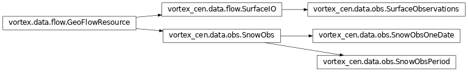
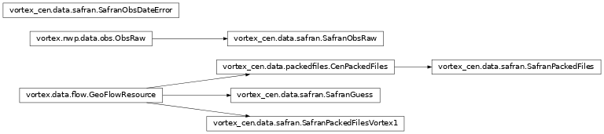
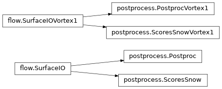
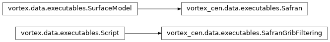

Vortex-cen Resources¶
Specific CEN data resources.
flow.py¶
Abstract base classes for all SURFEX/Crocus IO flow resources.
- class vortex_cen.data.flow.SurfaceIO(*args, **kw)[source]¶
Bases:
GeoFlowResourceAbstract base classe for all surface IO flow resources used in snowpack simulations. SurfaceIO resources are NetCDF files covering a time period defined by the datebegin and dateend footprints. Note that the date and cutoff footprints comonly used in NWP applications are optional and used only in an operational context.
- clscontents¶
The class instantiated to read the container’s content
- cutoff¶
The cutoff type of the generating process.
- date¶
The generating process run date.
- datebegin¶
First date of the forcing file
- dateend¶
Last date of the forcing file
- generic_pathinfo()¶
Returns anonymous dict with suitable informations from vortex point of view. Doomed to be overwritten.
- geometry¶
The resource’s massif geometry.
- model¶
The model name (from a source code perspective).
- namebuilding_info()¶
Returns anonymous dict with suitable informations from vortex point of view. In real world, probably doomed to return an empty dict.
- nativefmt¶
The resource’s storage format.
- property realkind¶
Actual footprint kind, by default the clskind.
surfex.py¶
SURFEX/Crocus output resources.


- class vortex_cen.data.surfex.Pro(*args, **kw)[source]¶
Bases:
SurfaceIOClass for the SURFEX/Crocus output files.
- class vortex_cen.data.surfex.Pro_xios(*args, **kw)[source]¶
Bases:
ProClass for the SURFEX/Crocus output files produced through an IO server.
- class vortex_cen.data.surfex.Prep(*args, **kw)[source]¶
Bases:
InitialConditionClass for the SURFEX-Crocus initialisation of the snowpack state.
- class vortex_cen.data.surfex.ProVortex1(*args, **kw)[source]¶
Bases:
SurfaceIOVortex1Class for the SURFEX/Crocus output files.
consts.py¶
Specific CEN “genv” resources.

- class vortex_cen.data.consts.SAFRANList(*args, **kw)[source]¶
Bases:
GenvModelGeoResourceNot documented yet.
- class vortex_cen.data.consts.Params(*args, **kw)[source]¶
Bases:
GenvModelGeoResourceNot documented yet.
- class vortex_cen.data.consts.climTG(*args, **kw)[source]¶
Bases:
GenvModelGeoResourceGround temperature climatological resource.
- class vortex_cen.data.consts.GridTarget(*args, **kw)[source]¶
Bases:
GenvModelGeoResourceResource describing a grid for interpolation of data based on massifs geometry
meteo.py¶
Resources related to SURFEX/Crocus meteorological FORCINGs

- class vortex_cen.data.meteo.SurfaceForcing(*args, **kw)[source]¶
Bases:
SurfaceIOClass for all kind of meteorological forcing files. Files containing only some meteorological forcing variables can be identsince forcing different kind, which may be usefull for the developpement of EDELWEISS while forcing variables come from different sources (SAFRAN, PE-AROME, ANTILOPE,…)
- class vortex_cen.data.meteo.SurfaceForcingVortex1(*args, **kw)[source]¶
Bases:
SurfaceIOVortex1This class is here for retro-compatibilty with resources produced before the migration to vortex2
obs.py¶
Snow observation resources

- class vortex_cen.data.obs.SnowObs(*args, **kw)[source]¶
Bases:
GeoFlowResourceAbstract class for snow observations in netcdf format (unknown time management)
- class vortex_cen.data.obs.SnowObsPeriod(*args, **kw)[source]¶
Bases:
SnowObsSnow observations covering a time period in netcdf format
assim.py¶
SODA output resources
safran.py¶
SAFRAN-specific flow resources.

- class vortex_cen.data.safran.SafranGuess(*args, **kw)[source]¶
Bases:
GeoFlowResourceClass for the guess file (P ou E file) that is used by SAFRAN.
- class vortex_cen.data.safran.SafranPackedFiles(*args, **kw)[source]¶
Bases:
CenPackedFilesClass for SAFRAN archives.
packedfiles.py¶
Packed resources (tar files) including several small files.
- class vortex_cen.data.packedfiles.CenPackedFiles(*args, **kw)[source]¶
Bases:
GeoFlowResourceAbstract class for CEN archives to reduce the number of small files.
- class vortex_cen.data.packedfiles.SurfexPackedFiles(*args, **kw)[source]¶
Bases:
CenPackedFilesClass for Surfex packed files.
postprocess.py¶
SURFEX/Crocus post-processing resources.

- class vortex_cen.data.postprocess.Postproc(*args, **kw)[source]¶
Bases:
SurfaceIOClass for post-processed SURFEX/Crocus output files.
- class vortex_cen.data.postprocess.ScoresSnow(*args, **kw)[source]¶
Bases:
SurfaceIOClass for scores of snow simulations.
- class vortex_cen.data.postprocess.PostprocVortex1(*args, **kw)[source]¶
Bases:
SurfaceIOVortex1Class for post-processed SURFEX/Crocus output files.
- class vortex_cen.data.postprocess.ScoresSnowVortex1(*args, **kw)[source]¶
Bases:
SurfaceIOVortex1Class for scores of snow simulations.
executables.py¶
Specific CEN executables.
